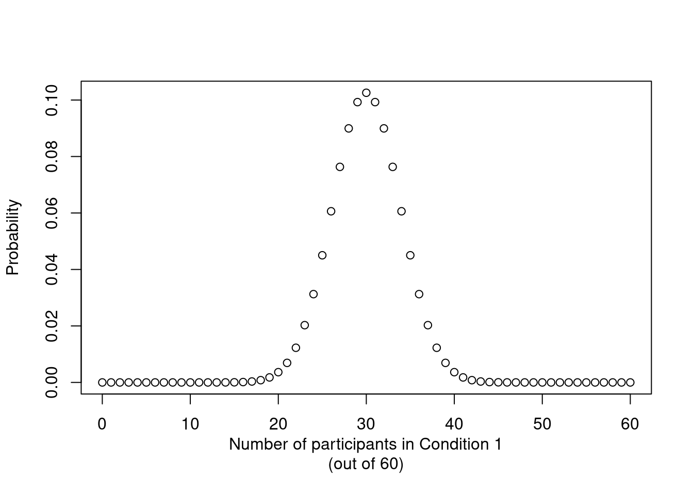

Causes and consequences of unequal sample sizes
In this blog post, I want to dispel a myth that’s reasonably common among students: the notion that there’s something wrong about a study that compares groups of different sizes.
Goal
There is something aesthetically pleasing about studies that compare two equal-sized groups. An experiment with two conditions with 30 participants each looks ‘cleaner’ than one with 27 participants in one condition and 34 in the other. Whatever the reasons for this aesthetic appeal may be, I’m going to argue that there’s nothing un-kosher about unequal sample sizes per se. This post is geared first and foremost to our MA students, primarily to help them get rid of the idea that they should throw away data in order to perfectly balance their datasets.
There are three main causes of unequal sample sizes: simple random assignment of participants to conditions; planned imbalances; and drop-outs and missing data. I will discuss these in order.
Simple randomisation as the cause of sample size imbalance
The random assignment of participants to the different conditions is the hallmark of a ‘true experiment’ and distinguishes it from ‘quasi-experiments’. Random assignment can be accomplished in essentially two different ways. The first technique is complete randomisation: first, sixty participants are recruited; then, half of them are randomly assigned to the control and half to the experimental condition. This technique guarantees that an equal number of participants is assigned to both conditions. The second technique is simple randomisation: for each participant that volunteers for the experiment, there’s a 50/50 chance that she ends up in the control or in the experimental condition – regardless of how large either sample already is. Simple randomisation causes unequal sample sizes: you’re not guaranteed to get exactly 30 heads in 60 coin flips, and similarly you’re not guaranteed to get exactly 30 participants in either condition.
(Note: Some refer to ‘simple randomisation’ as ‘complete randomisation’, so check how the procedures are described when reading about randomisation techniques.)
Unequal sample sizes, then, may be the consequence of using simple rather than complete randomisation. And there can be good reasons for choosing simple rather than complete randomisation as your allocation technique, notably a reduced potential for selection bias (see Kahan et al. 2015) and ease of planning (it’s easier to let the experimental software take care of the randomisation than to keep track of the number of participants in each condition as participants find their way to the lab).
Compared to complete randomisation, simple randomisation seems to have a distinct disadvantage, however: an experiment with 60 participants in total has more power, i.e. a better chance to find systematic differences between the conditions, if the participants are distributed evenly across the conditions (i.e. 30/30, complete randomisation) than if they’re distributed unevenly (e.g. 20/40). (This is assuming that the variability in both conditions is comparable.) For this reason, it’s usually much better to have 50 participants in both conditions rather than 20 in one condition and 200 in the other – even though the total number of participants is much greater in the second set-up. Simple randomisation, however, can cause such imbalances. In fact, it’s possible to end up with no participants in one of the groups.
But. While stark imbalances are possible when using simple randomisation, they’re also pretty improbable. Figure 1 shows the probability of ending up with any number of participants in one condition when 60 participants are randomly assigned to one of two conditions with equal probability. As this graph illustrates, it’s highly improbable to end up with 10 participants in the first condition (and 50 in the other). In fact, in 999 out of 1,000 cases, you’ll end up with between 17 and 43 participants in each group.
Additionally, while equal-sized groups maximise statistical power, the advantage is easily overstated. An experiment with 30+30 participants has a 76% chance to detect a systematic difference of 0.7 standard deviations between the two group means; for an experiment with 20+40 participants, this probability is 71%. On average, an experiment in which 60 participants are assigned to the conditions according to a simple randomisation procedure has 75% power to detect a difference of 0.7 standard deviations. The difference in power between complete randomisation (guaranteeing equal sample sizes) and simple randomisation, then, is minimal. Table 1 compares a couple of additional set-ups, and all point to the same conclusion: the loss of power associated with simple vs. complete randomisation is negligible.
| Total number of participants | Difference (sd) | Power complete randomisation (t-test) | Power simple randomisation (t-test) |
|---|---|---|---|
| 20 | 0.7 | 0.32 | 0.30 |
| 60 | 0.7 | 0.76 | 0.75 |
| 120 | 0.7 | 0.97 | 0.97 |
| 20 | 0.3 | 0.10 | 0.10 |
| 60 | 0.3 | 0.21 | 0.21 |
| 120 | 0.3 | 0.37 | 0.37 |
Simple randomisation and the unequal sample sizes it gives rise to, then, aren’t much of a problem when comparing the means of two groups. For more complex (factorial) designs, however, they do present some complications. Specifically, cell size imbalances in factorial designs force the analyst to decide whether the effects should be estimated by means of Type I, Type II or Type III sums of squares (see the explanation by Falk Scholer). I don’t feel qualified to give any definite advice in this matter other than to point out the following:
What’s usually (though not invariably) of interest in a factorial design is the interaction between the predictors rather than their main effects.
The conclusions about the highest-order interaction aren’t affected by the choice between Type I, Type II or Type III sums of squares. In the most common case, if you have two independent variables, the test for the interaction between them gives the same result irrespective of your sums of squares choice.
So, if you’re interested in this interaction and not so much in the independent effects of the predictors, it doesn’t really matter.
In conclusion, sample size imbalances can be the result of assigning participants to conditions by means of simple randomisation. When comparing two groups, this doesn’t really present any problems. When the study has a factorial design, though, you may want to brush up on Type I/II/III sums of squares. But whatever you do, don’t throw away precious data just to make the group sizes equal.
Planned imbalances
Researchers sometimes intentionally recruit a greater number of participants in one condition than in the other. This seems to be particularly the case in quasi-experiments, i.e. studies in which the allocation of participants to condition is predetermined rather than manipulated by the researcher (e.g. comparisons of native speakers to foreign language learners). From what I can tell, the (usually tacit) reasons for such imbalances include:
accessibility problems and financial cost: It may be more difficult or more costly to recruit participants in secluded villages than university students;
a relative lack of interest: Comparisons within, say, the Learner group may be considered more interesting than comparisons between the Learner and the Native Speaker group;
less variability in one group: One group may be considerably more homogeneous with respect to some linguistic behaviour than the other one, so you gain less by recruiting participants for one group than for the other.
So, even when the unequal sample sizes were planned and not due to simple randomisation, they may be a matter of sound reasoning and practicality rather than of poor design.
Drop-outs and missing data
Imbalances can arise when participants drop out of the study or when data is lost due to technical glitches. These cases are different from the previous two (simple randomisation and planned imbalances) as they needn’t be due to different numbers of participants being assigned to the experiment’s conditions. Rather, at the end of the study, different numbers of participants remain there to be analysed.
When data are lost due to, say, computer malfunctions, the loss of data can reasonably be expected not to skew the study’s results by occurring more often in one condition than in the other or by primarily affecting high or low performers etc. In this case, the lost data are said to be missing completely at random. While such losses of data are unfortunate as they lead to a loss of statistical power, they’re benign in that you can just discount the missing data and run your analyses on the remaining data without introducing bias. (Alternatively, the analyst could try to impute the missing data, but that’s for another time.)
Not all missing data are missing completely at random, however. Say that an experimental study finds that children in L2 immersion classes outperform children in the control group (traditional classes) in subjects such as geography and biology. Such a finding could well be interpreted as evidence for bilingual advantages extending into scholastic performance. Now imagine that out of the 230 children starting the school year in an L2 class, 80 switched to traditional classes and dropped out of the study (35%), whereas out of the 200 children starting out in the control group, 20 went off the radar (10%). All of a sudden, the picture for L2 immersion looks bleaker: it’s plausible that it’s especially the pupils that would’ve performed poorly dropped out of the L2 immersion classes, and that the positive effect is the result of L2 immersion being more selective rather than being more effective. In such cases, the lost data are said to be not missing at random. Indeed, the very fact that more data are missing in the L2 immersion group than in the control condition is informative in its own right and should be taken into account when evaluating the efficacy of L2 immersion.
(There’s a third kind of ‘missingness’, viz. missing at random, which describes the situation in which the missingness can be accounted for by control variables.)
Summary
The main points to take away from this blog post are the following:
A sample size imbalance isn’t a tell-tale sign of a poor study.
You don’t need equal-sized groups to compute accurate statistics.
If the sample size imbalance is due to drop-outs rather than due to design, simple randomisation or technical glitches, this is something to take into account when interpreting the results.
Whatever you do, don’t throw away data.
R code: Average power of experiments with simple randomisation
# Load pwr package
library(pwr)
# To compute power for complete randomisation, use:
pwr.t.test(n = 30, d = 0.7)$power[1] 0.7599049pwr.t.test(n = 30, d = 0.2)$power[1] 0.1186794For experiments where the allocation was done using simple randomisation, we need to compute the power of each possible combination of sample sizes and weight it by its probability of occurrence. The pwr.t2n.test() function will return an error when the sample size in one condition is 0 or 1, so we’ll manually set the power for these cases to 0.
weighted.power <- function(total.n, d) {
# Compute power for n1 = 2, 3 etc. n-2
# And add 0 for n1 = 0, 1, n-1 and n
power.unbalanced <- c(0, 0, pwr.t2n.test(n1 = 2:(total.n - 2),
n2 = (total.n-2):2,
d = d)$power,
0, 0)
# Compute probability of each n1/n2 combination occurring
weights <- dbinom(0:total.n, total.n, 0.5)
# Compute weighted average and return
return(weighted.mean(power.unbalanced, weights))
}
weighted.power(total.n = 60, d = 0.7)[1] 0.7527472weighted.power(total.n = 60, d = 0.2)[1] 0.1175073Software versions
devtools::session_info()─ Session info ───────────────────────────────────────────────────────────────
setting value
version R version 4.3.1 (2023-06-16)
os Ubuntu 22.04.3 LTS
system x86_64, linux-gnu
ui X11
language en_US
collate en_US.UTF-8
ctype en_US.UTF-8
tz Europe/Zurich
date 2023-08-25
pandoc 3.1.1 @ /usr/lib/rstudio/resources/app/bin/quarto/bin/tools/ (via rmarkdown)
─ Packages ───────────────────────────────────────────────────────────────────
package * version date (UTC) lib source
cachem 1.0.6 2021-08-19 [2] CRAN (R 4.2.0)
callr 3.7.3 2022-11-02 [1] CRAN (R 4.3.1)
cli 3.6.1 2023-03-23 [1] CRAN (R 4.3.0)
crayon 1.5.2 2022-09-29 [1] CRAN (R 4.3.1)
devtools 2.4.5 2022-10-11 [1] CRAN (R 4.3.1)
digest 0.6.29 2021-12-01 [2] CRAN (R 4.2.0)
ellipsis 0.3.2 2021-04-29 [2] CRAN (R 4.2.0)
evaluate 0.15 2022-02-18 [2] CRAN (R 4.2.0)
fastmap 1.1.0 2021-01-25 [2] CRAN (R 4.2.0)
fs 1.5.2 2021-12-08 [2] CRAN (R 4.2.0)
glue 1.6.2 2022-02-24 [2] CRAN (R 4.2.0)
htmltools 0.5.5 2023-03-23 [1] CRAN (R 4.3.0)
htmlwidgets 1.6.2 2023-03-17 [1] CRAN (R 4.3.1)
httpuv 1.6.11 2023-05-11 [1] CRAN (R 4.3.1)
jsonlite 1.8.7 2023-06-29 [1] CRAN (R 4.3.1)
knitr 1.39 2022-04-26 [2] CRAN (R 4.2.0)
later 1.3.1 2023-05-02 [1] CRAN (R 4.3.1)
lifecycle 1.0.3 2022-10-07 [1] CRAN (R 4.3.0)
magrittr 2.0.3 2022-03-30 [1] CRAN (R 4.3.0)
memoise 2.0.1 2021-11-26 [2] CRAN (R 4.2.0)
mime 0.10 2021-02-13 [2] CRAN (R 4.0.2)
miniUI 0.1.1.1 2018-05-18 [1] CRAN (R 4.3.1)
pkgbuild 1.4.2 2023-06-26 [1] CRAN (R 4.3.1)
pkgload 1.3.2.1 2023-07-08 [1] CRAN (R 4.3.1)
prettyunits 1.1.1 2020-01-24 [2] CRAN (R 4.2.0)
processx 3.8.2 2023-06-30 [1] CRAN (R 4.3.1)
profvis 0.3.8 2023-05-02 [1] CRAN (R 4.3.1)
promises 1.2.0.1 2021-02-11 [1] CRAN (R 4.3.1)
ps 1.7.5 2023-04-18 [1] CRAN (R 4.3.1)
purrr 1.0.1 2023-01-10 [1] CRAN (R 4.3.0)
pwr * 1.3-0 2020-03-17 [1] CRAN (R 4.3.1)
R6 2.5.1 2021-08-19 [2] CRAN (R 4.2.0)
Rcpp 1.0.11 2023-07-06 [1] CRAN (R 4.3.1)
remotes 2.4.2 2021-11-30 [2] CRAN (R 4.2.0)
rlang 1.1.1 2023-04-28 [1] CRAN (R 4.3.0)
rmarkdown 2.21 2023-03-26 [1] CRAN (R 4.3.0)
rstudioapi 0.14 2022-08-22 [1] CRAN (R 4.3.0)
sessioninfo 1.2.2 2021-12-06 [2] CRAN (R 4.2.0)
shiny 1.7.4.1 2023-07-06 [1] CRAN (R 4.3.1)
stringi 1.7.12 2023-01-11 [1] CRAN (R 4.3.1)
stringr 1.5.0 2022-12-02 [1] CRAN (R 4.3.0)
urlchecker 1.0.1 2021-11-30 [1] CRAN (R 4.3.1)
usethis 2.2.2 2023-07-06 [1] CRAN (R 4.3.1)
vctrs 0.6.3 2023-06-14 [1] CRAN (R 4.3.0)
xfun 0.39 2023-04-20 [1] CRAN (R 4.3.0)
xtable 1.8-4 2019-04-21 [1] CRAN (R 4.3.1)
yaml 2.3.5 2022-02-21 [2] CRAN (R 4.2.0)
[1] /home/jan/R/x86_64-pc-linux-gnu-library/4.3
[2] /usr/local/lib/R/site-library
[3] /usr/lib/R/site-library
[4] /usr/lib/R/library
──────────────────────────────────────────────────────────────────────────────